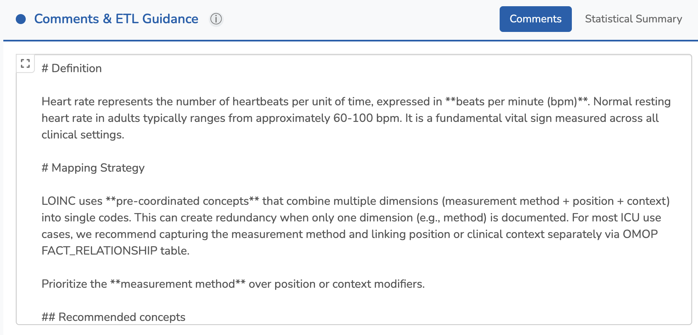
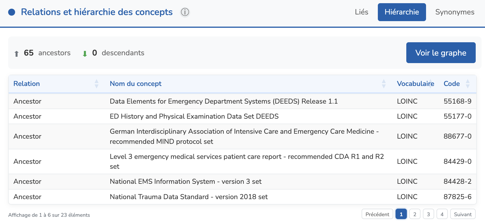
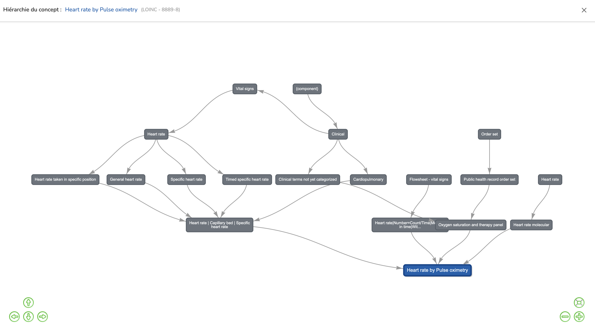

Détails d'un concept général
Lorsque vous sélectionnez un concept général dans la liste des Concepts généraux, vous accédez à la vue détaillée. Cette page affiche des informations complètes sur le concept général sélectionné, organisées dans un agencement à quatre panneaux.

Vue d'ensemble de l'agencement
La vue détaillée est divisée en quatre quadrants :
- En haut à gauche : concepts associés — concepts terminologiques spécifiques (LOINC, SNOMED, RxNorm) liés à ce concept général, avec leurs identifiants de concepts OMOP
- En haut à droite : détails du concept sélectionné — métadonnées détaillées sur le concept actuellement sélectionné dans la table des concepts associés
- En bas à droite : relations et hiérarchie des concepts — concepts liés, position hiérarchique et synonymes des vocabulaires OMOP
- En bas à gauche : commentaires et conseils ETL — commentaires d'experts et informations statistiques sur la distribution pour faciliter l'alignement des données
1. Concepts associés (en haut à gauche)
Ce panneau affiche tous les concepts terminologiques associés au concept général sélectionné. Il s'agit de codes spécifiques issus de vocabulaires standards (LOINC, SNOMED CT, RxNorm, ICD-10) qui ont été mappés à ce concept général.

Fonctionnalités du tableau
- Visibilité des colonnes — Cliquez sur le menu déroulant Colonnes en haut à gauche du tableau pour afficher ou masquer des colonnes spécifiques
- Filtres de colonnes — Utilisez les champs de texte en haut de chaque colonne pour une correspondance exacte
- Recherche approximative — Utilisez le champ de recherche approximative pour une correspondance approximative sur les noms de concepts
- Sélection de ligne — Cliquez sur une ligne pour la sélectionner. Les panneaux Détails du concept sélectionné et Relations des concepts se mettront à jour pour afficher les informations sur le concept sélectionné
Options de copie
Le bouton Copier en haut à droite du tableau propose des options d'export :

- Copier en ATLAS JSON — Copie le concept set au format ATLAS JSON. Ce format est compatible avec les concept sets OHDSI ATLAS
- Copier OMOP SQL — Copie une requête SQL qui inclut tous les concepts associés pour ce concept général
Mode édition
Lorsque vous entrez en mode édition en cliquant sur Editer la page en haut à droite, les boutons d'action changent pour :
- Plein écran — Affiche le tableau en mode plein écran pour faciliter l'édition
- Tout supprimer — Supprime tous les concepts associés à ce concept général
- Importer JSON — Importe des concepts depuis un fichier de concept set ATLAS JSON
- Ajouter les concepts — Ouvre la fenêtre modale pour ajouter de nouveaux concepts à la liste

En mode édition, vous sélectionnez généralement des concepts de classification plus larges et incluez leurs descendants. Par exemple, vous pourriez ajouter des concepts comme :
- Heart rate | Arterial system | Heart rate taken in specific position (LOINC LP416415-0, Classification)
- Heart rate | Peripheral artery | Specific heart rate (LOINC LP415785-7, Classification)
En mode visualisation, le tableau affiche le concept set complet étendu, incluant tous les descendants. Pour le même concept général, vous verrez des concepts standards spécifiques comme :
- Heart rate --W exercise (LOINC 89273-7, Standard)
- Heart rate --during anesthesia (LOINC 89278-6, Standard)
- Heart rate --post exercise (LOINC 40442-6, Standard)
- Heart rate --resting (LOINC 40443-4, Standard)
Cette approche vous permet de gérer efficacement les concept sets en sélectionnant des concepts parents plutôt que d'ajouter individuellement des centaines de concepts spécifiques.
Ajout de concepts
Cliquer sur Ajouter des concepts ouvre une fenêtre modale avec deux onglets :
Rechercher des concepts OMOP
Cet onglet vous permet de rechercher dans toute la base de données de vocabulaires OMOP :

- Recherche approximative — Recherchez des concepts par nom avec correspondance approximative
- Limiter à 10K — Activez cette option pour limiter les résultats à 10 000 concepts. Cela évite de surcharger le tableau lors de la recherche parmi des millions de concepts OMOP
- Filtres avancés — Filtrez par Vocabulary ID, Domain ID, Concept Class ID, statut Standard Concept et Validity. Cela vous permet d'afficher tous les concepts filtrés (en désactivant "Limiter à 10K")
Lorsque vous cliquez sur un concept dans les résultats de recherche, vous pouvez voir ses détails et ses descendants.
Options de concept set
Lors de l'ajout de concepts, vous pouvez configurer trois options importantes qui définissent comment le concept sera inclus dans le concept set :
- Exclure — Lorsque coché, ce concept sera exclu du concept set. C'est utile lorsque vous souhaitez inclure tous les descendants d'un concept parent sauf certains spécifiques. Lorsque combiné avec "Descendants", tous les concepts descendants seront également exclus
- Descendants — Lorsque coché, tous les concepts descendants (enfants, petits-enfants, etc.) dans la hiérarchie du vocabulaire seront automatiquement inclus dans le concept set. Si "Exclure" est également coché, tous les descendants seront exclus du concept set
- Mappés — Lorsque coché, les concepts mappés à ce concept via des relations "Maps to" seront également inclus
Ces options suivent la logique des concept sets OHDSI ATLAS. Pour des informations détaillées sur le fonctionnement des concept sets, consultez la documentation des concept sets ATLAS.
Ajouter un concept personnalisé
Cet onglet vous permet d'ajouter des concepts personnalisés qui peuvent ne pas exister dans les vocabulaires OMOP standards.

L'ajout de concepts personnalisés doit être absolument évité dans la mesure du possible. Les concepts personnalisés altèrent l'interopérabilité et empêchent le partage de données à travers le réseau OHDSI.
Si vous avez besoin d'un concept qui n'existe pas dans les vocabulaires standards, cela ne devrait être utilisé que comme solution temporaire pendant que vous soumettez le concept au groupe de travail OHDSI Vocabulary pour trouver une solution permanente.
2. Détails du concept sélectionné (en haut à droite)
Lorsqu'un concept est sélectionné dans le tableau des concepts associés, ce panneau affiche ses métadonnées complètes :

- Vocabulary ID — Le vocabulaire source (LOINC, SNOMED, RxNorm, etc.)
- Concept Name — Le nom officiel du concept
- Category — La catégorie du concept général
- Subcategory — La sous-catégorie du concept général
- Domain ID — Le domaine OMOP (Measurement, Condition, Drug, etc.)
- Concept Class — La classe du concept dans le vocabulaire
- Validity — Si le concept est actuellement valide ou déprécié
- Standard — Statut de concept standard (Standard, Classification, ou Non-standard)
- Concept Code — Le code dans le vocabulaire source
- OMOP Concept ID — L'identifiant OMOP unique (lien vers ATHENA)
- FHIR Resource — Lien pour voir le concept sur un serveur de terminologie FHIR
Informations sur l'unité
Pour les concepts de mesure, des informations supplémentaires sur l'unité sont affichées :
- Unit Concept Name — Le nom de l'unité associée (par ex., "per minute")
- Unit Concept Code — Le code UCUM (par ex., "/min")
- Unit Concept ID — L'identifiant de concept OMOP pour l'unité
- Unit FHIR Resource — Lien pour voir l'unité sur un serveur FHIR
- Unit Conversions — Conversions d'unités disponibles pour ce concept
Liens externes
Le panneau fournit des liens directs vers :
- ATHENA — Voir le concept sur le navigateur de vocabulaires OHDSI ATHENA
- FHIR Terminology Server — Voir le concept comme une ressource FHIR CodeSystem
Attribution d'unités
En mode édition, vous pouvez attribuer un Unit Concept ID aux concepts de mesure. Les unités doivent être des concepts UCUM (Unified Code for Units of Measure) du vocabulaire OMOP.
3. Commentaires et conseils ETL (en bas à gauche)
Ce panneau fournit des conseils essentiels pour l'alignement des données et les processus ETL.
Commentaires d'experts
L'onglet Commentaires contient des conseils d'experts rédigés par des spécialistes du domaine (data scientists et experts cliniques). Ces commentaires décrivent :
- La signification clinique et le contexte du concept général
- Quels concepts associés privilégier dans différents scénarios
- Les pièges courants et les cas limites à considérer pendant l'ETL
- Les différences entre des concepts similaires à travers les vocabulaires
Ce contenu est continuellement enrichi au fur et à mesure que les experts contribuent leurs connaissances.
En mode édition, l'éditeur de commentaires offre une vue à deux panneaux avec aperçu markdown en direct :

Résumé statistique
L'onglet Résumé statistique affiche les distributions de données attendues pour ce concept général. Ces informations aident à valider vos données pendant l'ETL en fournissant des plages de référence et des patterns typiques.

Les données statistiques sont stockées au format JSON. Vous pouvez fournir un seul profil statistique directement, ou utiliser plusieurs profils pour différentes populations de patients (par ex., Adulte, Enfant, Nouveau-né).
Structure JSON requise
Pour créer un fichier JSON statistique valide, suivez ces exigences :
Option 1 : Données statistiques directes (Simple)
Fournissez les données statistiques directement au niveau racine (pas besoin de tableau profiles) :
- requis "name_en" — Nom du profil en anglais
- requis "name_fr" — Nom du profil en français
- requis "description_en" — Description du profil en anglais
- requis "description_fr" — Description du profil en français
- requis "data_types" — Tableau : ["numeric"], ["categorical"], ou les deux
Option 2 : Profils multiples (Avancé)
Utilisez un tableau profiles pour différentes populations de patients (chaque profil a la même structure que l'Option 1) :
- requis "profiles" — Tableau d'objets profils
- requis "default_profile" — Chaîne correspondant au name_en d'un profil
Champs de données numériques
Si "data_types" inclut "numeric", ajoutez un objet "numeric_data" avec :
- requis "min" — Valeur minimale
- requis "max" — Valeur maximale
- requis "mean" — Moyenne arithmétique
- requis "median" — Médiane (50e percentile)
- requis "sd" — Écart-type
- optionnel "cv" — Coefficient de variation (sd/mean × 100)
- optionnel "p5" — 5e percentile
- requis "p25" — 25e percentile (Q1)
- requis "p75" — 75e percentile (Q3)
- optionnel "p95" — 95e percentile
Données d'histogramme
Ajoutez un tableau "histogram" avec des objets contenant :
- "x" — Centre de la classe ou valeur
- "count" — Nombre d'observations
Règles pour les histogrammes :
- Utilisez 10-50 classes pour les données continues (plus de classes offrent une meilleure résolution)
- Les valeurs doivent être en ordre croissant par "x"
- Couvrir la plage de p5 à p95 (ou plus large)
- Utilisez un tableau vide [] si aucune donnée d'histogramme n'est disponible
Champs de données catégorielles
Si "data_types" inclut "categorical", ajoutez un tableau "categorical_data" avec des objets :
- "category" — Nom de la catégorie
- "count" — Nombre d'observations
- optionnel "percentage" — Valeur en pourcentage
Métadonnées supplémentaires
- optionnel "measurement_frequency" — Objet avec "typical_interval": "hourly" | "continuous" | "daily" | "weekly"
Exemple complet (Cliquer pour développer)
Voir l'exemple JSON complet avec 3 profils (Adulte, Enfant, Nouveau-né)
{
"profiles": [
{
"name_en": "Adult",
"description_en": "Adults (18+ years)",
"name_fr": "Adulte",
"description_fr": "Adultes (18+ ans)",
"data_types": ["numeric"],
"numeric_data": {
"min": 25,
"max": 220,
"mean": 82.4,
"median": 78,
"sd": 18.6,
"cv": 22.5,
"p5": 52,
"p25": 68,
"p75": 92,
"p95": 118
},
"histogram": [
{"x": 30, "count": 1245},
{"x": 40, "count": 4982},
{"x": 50, "count": 37284},
{"x": 60, "count": 124568},
{"x": 70, "count": 286542},
{"x": 80, "count": 324567},
{"x": 90, "count": 248956},
{"x": 100, "count": 124568},
{"x": 110, "count": 56234},
{"x": 120, "count": 24856},
{"x": 130, "count": 8456},
{"x": 140, "count": 2845},
{"x": 150, "count": 956}
],
"categorical_data": [],
"measurement_frequency": {
"typical_interval": "hourly"
}
},
{
"name_en": "Child",
"description_en": "Children (1-17 years)",
"name_fr": "Enfant",
"description_fr": "Enfants (1-17 ans)",
"data_types": ["numeric"],
"numeric_data": {
"min": 45,
"max": 200,
"mean": 98.5,
"median": 95,
"sd": 22.3,
"cv": 22.6,
"p5": 65,
"p25": 82,
"p75": 112,
"p95": 145
},
"histogram": [
{"x": 50, "count": 892},
{"x": 60, "count": 3567},
{"x": 70, "count": 12456},
{"x": 80, "count": 28945},
{"x": 90, "count": 45678},
{"x": 100, "count": 52341},
{"x": 110, "count": 38956},
{"x": 120, "count": 24567},
{"x": 130, "count": 12345},
{"x": 140, "count": 5678},
{"x": 150, "count": 2345},
{"x": 160, "count": 892}
],
"categorical_data": [],
"measurement_frequency": {
"typical_interval": "hourly"
}
},
{
"name_en": "Newborn",
"description_en": "Newborns (0-28 days)",
"name_fr": "Nouveau-né",
"description_fr": "Nouveau-nés (0-28 jours)",
"data_types": ["numeric"],
"numeric_data": {
"min": 80,
"max": 205,
"mean": 142.5,
"median": 140,
"sd": 18.2,
"cv": 12.8,
"p5": 115,
"p25": 130,
"p75": 155,
"p95": 175
},
"histogram": [
{"x": 85, "count": 234},
{"x": 95, "count": 567},
{"x": 105, "count": 1892},
{"x": 115, "count": 4567},
{"x": 125, "count": 8945},
{"x": 135, "count": 14567},
{"x": 145, "count": 16789},
{"x": 155, "count": 12345},
{"x": 165, "count": 6789},
{"x": 175, "count": 2345},
{"x": 185, "count": 678},
{"x": 195, "count": 189}
],
"categorical_data": [],
"measurement_frequency": {
"typical_interval": "continuous"
}
}
],
"default_profile": "Adult"
}Exemple avec données catégorielles (Cliquer pour développer)
Voir l'exemple de données catégorielles
{
"profiles": [
{
"name_en": "Adult",
"description_en": "Adults (18+ years)",
"name_fr": "Adulte",
"description_fr": "Adultes (18+ ans)",
"data_types": ["categorical"],
"numeric_data": {},
"histogram": [],
"categorical_data": [
{"category": "Normal", "count": 65432, "percentage": 68.5},
{"category": "Abnormal", "count": 21234, "percentage": 22.2},
{"category": "Critical", "count": 8890, "percentage": 9.3}
],
"measurement_frequency": {
"typical_interval": "daily"
}
}
],
"default_profile": "Adult"
}4. Relations et hiérarchie des concepts (en bas à droite)
Ce panneau montre comment le concept sélectionné est lié à d'autres concepts dans les vocabulaires OMOP. Il comporte trois onglets :
Onglet Liés
Affiche les concepts liés au concept sélectionné via la table OMOP CONCEPT_RELATIONSHIP.
Cela inclut des relations comme :
- "Maps to" — Alignement vers des concepts standards
- "Is a" — Relations hiérarchiques
- "Has component" — Relations de composants pour les panels de laboratoire
- Et de nombreux autres types de relations spécifiques à chaque vocabulaire
Onglet Hiérarchie
Montre la position hiérarchique du concept sélectionné en utilisant la table OMOP CONCEPT_ANCESTOR.
Cela affiche :
- Ancêtres — Concepts parents remontant dans l'arbre hiérarchique
- Descendants — Concepts enfants descendant dans l'arbre hiérarchique
Cliquez sur Voir le graphe pour visualiser la hiérarchie sous forme de graphe interactif. Cela fournit une représentation visuelle de l'organisation des concepts dans la structure du vocabulaire.
Le graphe hiérarchique est entièrement interactif :
- Double-cliquez sur n'importe quel concept dans le graphe pour recentrer la visualisation sur ce concept. Un nouveau graphe apparaîtra, montrant les ancêtres et descendants du concept sélectionné
- Concept précédent mis en évidence — Le concept que vous visualisiez précédemment apparaît en orange, facilitant le suivi de votre chemin de navigation dans la hiérarchie
- Navigation retour — Utilisez le bouton flèche de retour en haut à droite du graphe pour revenir à la vue du concept précédent
Onglet Synonymes
Liste tous les synonymes du concept sélectionné depuis la table OMOP CONCEPT_SYNONYM.
C'est utile pour comprendre les différents noms et termes utilisés pour désigner le même concept
à travers différents contextes et langues.